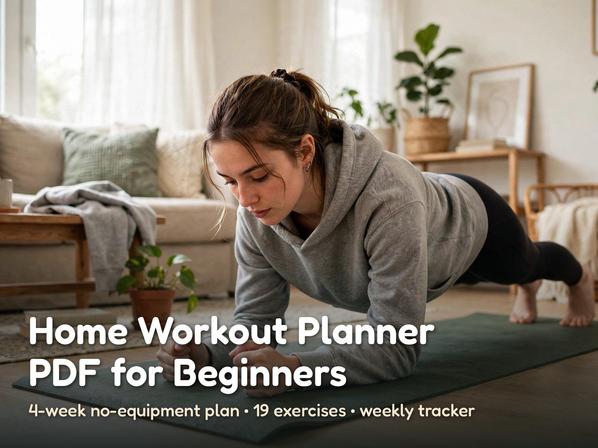

$9 USD — instant download
Home Workout Planner PDF for Beginners — 4-Week No-Equipment Bodyweight Plan, 19 Exercises & Weekly Tracker
Get it on GumroadMost beginner workout plans are written for people who already work out. This one is written for people starting from the couch: week 1 is deliberately manageable, the form cues are in plain English, and every exercise has a dial you can turn down on bad days without quitting. Three short sessions a week, alternating Workout A and Workout B — no equipment, no gym, no jumping around your apartment.
Four weekly pages lay out Workout A and Workout B with exact sets, reps and coaching notes, plus a one-page overview for the fridge and clear rules for missed sessions. The exercise index covers 19 exercises across legs and glutes, push and arms, and core, each with cues you will actually understand. The push-up progression path — wall, counter, knees, full, feet-elevated — means you always know your next step, and the easier/harder modifications table gives every exercise a dial in both directions, including an optional sturdy-table row for true pulling.
The non-negotiable five minutes at each end — warm-up and cool-down — are written out move by move, because beginners skip them precisely when nobody spells them out. Rest-day rules and a recovery guide explain how to read soreness, when to swap a session and when to stop. Weekly trackers record the session, the hardest move and the real numbers, and a weeks 5–8 progression guide shows how the plan continues once the first month is done, so finishing week 4 is a doorway, not a cliff.
This is a planning and organization tool for general beginner fitness — schedules, descriptions and trackers. It is not medical advice and not a substitute for a doctor, physiotherapist or qualified trainer. If you have a health condition or injury, are pregnant, or have not exercised in a long time, get professional clearance first; stop any exercise that causes sharp pain and get it checked. No plan can promise specific results — what this one promises is a safe structure, clear form and honest progression.
This is a digital download — no physical item will be shipped. For personal use; please do not redistribute or resell the file.